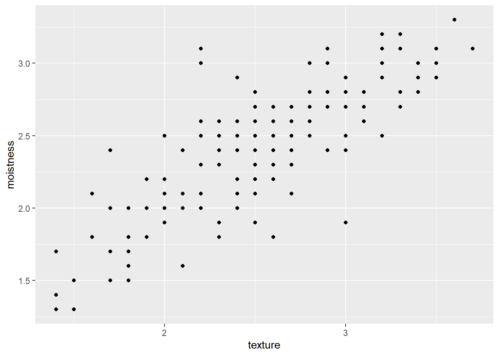

Chapter 9 CH10 Introduction to Importing Data in R
9.1 1.Flat files with utils
By default function:
read.csv(): csv fileread.delim(): tab-delimited file (txt file)read.table(): any file
9.1.1 1-1.read.csv
The utils package, which is automatically loaded in your R session on startup, can import CSV files with the read.csv() function.
- Defaults
header = TRUEsep = ","
# Import swimming_pools.csv: pools
pools <- read.csv("data/swimming_pools.csv")
# Print the structure of pools
str(pools)## 'data.frame': 20 obs. of 4 variables:
## $ Name : chr "Acacia Ridge Leisure Centre" "Bellbowrie Pool" "Carole Park" "Centenary Pool (inner City)" ...
## $ Address : chr "1391 Beaudesert Road, Acacia Ridge" "Sugarwood Street, Bellbowrie" "Cnr Boundary Road and Waterford Road Wacol" "400 Gregory Terrace, Spring Hill" ...
## $ Latitude : num -27.6 -27.6 -27.6 -27.5 -27.4 ...
## $ Longitude: num 153 153 153 153 153 ...With stringsAsFactors, you can tell R whether it should convert strings in the flat file to factors.
For all importing functions in the utils package, this argument is TRUE, which means that you import strings as factors. This only makes sense if the strings you import represent categorical variables in R. If you set stringsAsFactors to FALSE, the data frame columns corresponding to strings in your text file will be character.
# Import swimming_pools.csv correctly: pools
pools <- read.csv("data/swimming_pools.csv", stringsAsFactors = FALSE)
# Check the structure of pools
str(pools)## 'data.frame': 20 obs. of 4 variables:
## $ Name : chr "Acacia Ridge Leisure Centre" "Bellbowrie Pool" "Carole Park" "Centenary Pool (inner City)" ...
## $ Address : chr "1391 Beaudesert Road, Acacia Ridge" "Sugarwood Street, Bellbowrie" "Cnr Boundary Road and Waterford Road Wacol" "400 Gregory Terrace, Spring Hill" ...
## $ Latitude : num -27.6 -27.6 -27.6 -27.5 -27.4 ...
## $ Longitude: num 153 153 153 153 153 ...9.1.2 1-2.read.delim
There are also the .txt files which are basically text files. You can import these functions with read.delim().
Defaults
header = TRUEsep = "\t"
# Import hotdogs.txt: hotdogs
hotdogs <- read.delim("data/hotdogs.txt", header = FALSE)
# Summarize hotdogs
summary(hotdogs)## V1 V2 V3
## Length:54 Min. : 86.0 Min. :144.0
## Class :character 1st Qu.:132.0 1st Qu.:362.5
## Mode :character Median :145.0 Median :405.0
## Mean :145.4 Mean :424.8
## 3rd Qu.:172.8 3rd Qu.:503.5
## Max. :195.0 Max. :645.0Add column names by col.names().
# Finish the read.delim() call
hotdogs <- read.delim("data/hotdogs.txt", header = FALSE, col.names = c("type", "calories", "sodium"))
# Select the hot dog with the least calories: lily
lily <- hotdogs[which.min(hotdogs$calories), ]
# Select the observation with the most sodium: tom
tom <- hotdogs[which.max(hotdogs$sodium), ]
# Print lily and tom
rbind(lily, tom)By setting the colClasses argument to a vector of strings representing classes.
If a column is set to "NULL" in the colClasses vector, this column will be skipped and will not be loaded into the data frame.
# Display structure of hotdogs
str(hotdogs)## 'data.frame': 54 obs. of 3 variables:
## $ type : chr "Beef" "Beef" "Beef" "Beef" ...
## $ calories: int 186 181 176 149 184 190 158 139 175 148 ...
## $ sodium : int 495 477 425 322 482 587 370 322 479 375 ...# Edit the colClasses argument to import the data correctly: hotdogs2
hotdogs2 <- read.delim("data/hotdogs.txt", header = FALSE,
col.names = c("type", "calories", "sodium"),
colClasses = c("factor", "NULL", "numeric"))
# Display structure of hotdogs2
str(hotdogs2)## 'data.frame': 54 obs. of 2 variables:
## $ type : Factor w/ 3 levels "Beef","Meat",..: 1 1 1 1 1 1 1 1 1 1 ...
## $ sodium: num 495 477 425 322 482 587 370 322 479 375 ...9.1.3 1-3.read.table
If you’re dealing with more exotic flat file formats, you’ll want to use read.table(). It’s the most basic importing function; you can specify tons of different arguments in this function.
Defaults
header = FALSEsep = ""
# Path to the hotdogs.txt file: path
path <- file.path("data", "hotdogs.txt")
# Import the hotdogs.txt file: hotdogs
hotdogs <- read.table(path,
sep = "\t",
col.names = c("type", "calories", "sodium"))
# Call head() on hotdogs
head(hotdogs)9.2 2.readr & data.table
9.2.1 2-1.readr

9.2.1.1 read_csv
# Load the readr package
library(readr)
# Import potatoes.csv with read_csv(): potatoes
potatoes <- read_csv("data/potatoes.csv")## Rows: 160 Columns: 8
## ── Column specification ───────────────────────────────────────────────────
## Delimiter: ","
## dbl (8): area, temp, size, storage, method, texture, flavor, moistness
##
## ℹ Use `spec()` to retrieve the full column specification for this data.
## ℹ Specify the column types or set `show_col_types = FALSE` to quiet this message.9.2.1.2 read_tsv
TSV is short for tab-separated values.
# Column names
properties <- c("area", "temp", "size", "storage", "method",
"texture", "flavor", "moistness")
# Import potatoes.txt: potatoes
potatoes <- read_tsv("data/potatoes.txt", col_names = properties)## Rows: 160 Columns: 8
## ── Column specification ───────────────────────────────────────────────────
## Delimiter: "\t"
## dbl (8): area, temp, size, storage, method, texture, flavor, moistness
##
## ℹ Use `spec()` to retrieve the full column specification for this data.
## ℹ Specify the column types or set `show_col_types = FALSE` to quiet this message.# Call head() on potatoes
head(potatoes)9.2.1.3 read_delim
Just as read.table() was the main utils function, read_delim() is the main readr function.
read_delim() takes two mandatory arguments:
file: the file that contains the datadelim: the character that separates the values in the data file
others arguments:
col_names: use if there no column namescol_types: use if wanna manually set the types
# Column names
properties <- c("area", "temp", "size", "storage", "method",
"texture", "flavor", "moistness")
# Import potatoes.txt using read_delim(): potatoes
potatoes <- read_delim("data/potatoes.txt", delim = "\t",
col_names = properties)## Rows: 160 Columns: 8
## ── Column specification ───────────────────────────────────────────────────
## Delimiter: "\t"
## dbl (8): area, temp, size, storage, method, texture, flavor, moistness
##
## ℹ Use `spec()` to retrieve the full column specification for this data.
## ℹ Specify the column types or set `show_col_types = FALSE` to quiet this message.# Print out potatoes
potatoesThrough skip and n_max you can control which part of your flat file you’re actually importing into R.
skipspecifies the number of rows you’re ignoring in the flat file before actually starting to import data.n_maxspecifies the number of rows you’re actually importing.
Say for example you have a CSV file with 20 rows, and set skip = 2 and n_max = 3, you’re only reading in rows 3, 4 and 5 of the file.
Watch out: Once you skip some rows, you also skip the first row that can contain column names!
# Import observations 7, 8, 9, 10 and 11
# Import 5 observations from potatoes.txt: potatoes_fragment
potatoes_fragment <- read_tsv("data/potatoes.txt",
skip = 6, n_max = 5,
col_names = properties)## Rows: 5 Columns: 8
## ── Column specification ───────────────────────────────────────────────────
## Delimiter: "\t"
## dbl (8): area, temp, size, storage, method, texture, flavor, moistness
##
## ℹ Use `spec()` to retrieve the full column specification for this data.
## ℹ Specify the column types or set `show_col_types = FALSE` to quiet this message.potatoes_fragmentYou specify which types the columns with col_types.
- You can manually set the types with a string, where each character denotes the class of the column:
character,double,integer andlogical._skips the column as a whole.
# Import all data, but force all columns to be character: potatoes_char
potatoes_char <- read_tsv("data/potatoes.txt",
col_types = "cccccccc",
col_names = properties)
# Print out structure of potatoes_char
str(potatoes_char)## spc_tbl_ [160 × 8] (S3: spec_tbl_df/tbl_df/tbl/data.frame)
## $ area : chr [1:160] "1" "1" "1" "1" ...
## $ temp : chr [1:160] "1" "1" "1" "1" ...
## $ size : chr [1:160] "1" "1" "1" "1" ...
## $ storage : chr [1:160] "1" "1" "1" "1" ...
## $ method : chr [1:160] "1" "2" "3" "4" ...
## $ texture : chr [1:160] "2.9" "2.3" "2.5" "2.1" ...
## $ flavor : chr [1:160] "3.2" "2.5" "2.8" "2.9" ...
## $ moistness: chr [1:160] "3.0" "2.6" "2.8" "2.4" ...
## - attr(*, "spec")=
## .. cols(
## .. area = col_character(),
## .. temp = col_character(),
## .. size = col_character(),
## .. storage = col_character(),
## .. method = col_character(),
## .. texture = col_character(),
## .. flavor = col_character(),
## .. moistness = col_character()
## .. )
## - attr(*, "problems")=<externalptr>Another way of setting the types of the imported columns is using collectors. Collector functions can be passed in a
list()to thecol_typesargument ofread_functions to tell them how to interpret values in a column.For this exercise you will need two collector functions:
col_integer(): the column should be interpreted as an integer.col_factor(levels, ordered = FALSE): the column should be interpreted as a factor withlevels.
# Display the summary of hotdogs
summary(hotdogs)## type calories sodium
## Length:54 Min. : 86.0 Min. :144.0
## Class :character 1st Qu.:132.0 1st Qu.:362.5
## Mode :character Median :145.0 Median :405.0
## Mean :145.4 Mean :424.8
## 3rd Qu.:172.8 3rd Qu.:503.5
## Max. :195.0 Max. :645.0# The collectors you will need to import the data
fac <- col_factor(levels = c("Beef", "Meat", "Poultry"))
int <- col_integer()
# Edit the col_types argument to import the data correctly: hotdogs_factor
hotdogs_factor <- read_tsv("data/hotdogs.txt",
col_names = c("type", "calories", "sodium"),
col_types = list(fac, int, int))
# Display the summary of hotdogs_factor
summary(hotdogs_factor)## type calories sodium
## Beef :20 Min. : 86.0 Min. :144.0
## Meat :17 1st Qu.:132.0 1st Qu.:362.5
## Poultry:17 Median :145.0 Median :405.0
## Mean :145.4 Mean :424.8
## 3rd Qu.:172.8 3rd Qu.:503.5
## Max. :195.0 Max. :645.09.2.2 2-2.data.table
9.2.2.1 fread
- Infer column types and separators
- It simply works
- Extremely fast
- Possible to specify numerous parameters
- Improved
read.table() - Fast, convenient, customizable
# load the data.table package using library()
library(data.table)## data.table 1.14.8 using 2 threads (see ?getDTthreads). Latest news: r-datatable.com##
## 載入套件：'data.table'## 下列物件被遮斷自 'package:lubridate':
##
## hour, isoweek, mday, minute, month, quarter, second, wday,
## week, yday, year## 下列物件被遮斷自 'package:purrr':
##
## transpose## 下列物件被遮斷自 'package:dplyr':
##
## between, first, last# Import potatoes.csv with fread(): potatoes
potatoes <- fread("data/potatoes.csv")
# Print out potatoes
potatoesThere are two arguments of the fread() function: drop and select, to drop or select variables of interest.
# Suppose you have a dataset that contains 5 variables and you want to keep the first and fifth variable, named "a" and "e".
fread("path/to/file.txt", drop = 2:4)
fread("path/to/file.txt", select = c(1, 5))
fread("path/to/file.txt", drop = c("b", "c", "d"))
fread("path/to/file.txt", select = c("a", "e"))# Import columns 6 and 8 of potatoes.csv: potatoes
potatoes_fread <- fread("data/potatoes.csv", select = c(6, 8))
# Plot texture (x) and moistness (y) of potatoes
library(ggplot2)
ggplot(potatoes_fread, aes(x = texture, y = moistness)) +
geom_point()
The class of the result:
fread():data.tableanddata.frameread_csv():tbl_df,tbl,data.frame
9.3 3.Excel data
9.3.1 3-1.List the sheets of xls file
Before you can start importing from Excel, you should find out which sheets are available in the workbook. You can use the excel_sheets() function for this.
# Load the readxl package
library(readxl)
# Print the names of all worksheets
excel_sheets("data/urbanpop.xlsx")## [1] "1960-1966" "1967-1974" "1975-2011"9.3.2 3-2.Import an Excel sheet
You can do this with the read_excel() function. Have a look at this recipe:
data <- read_excel("data.xlsx", sheet = "my_sheet")This call simply imports the sheet with the name "my_sheet" from the "data.xlsx" file.
You can also pass a number to the sheet argument; this will cause read_excel() to import the sheet with the given sheet number. sheet = 1 will import the first sheet, sheet = 2 will import the second sheet, and so on.
# Read the sheets, one by one
# pop_1 same as read_excel("data/urbanpop.xlsx", sheet = "1960-1966")
pop_1 <- read_excel("data/urbanpop.xlsx", sheet = 1)
pop_2 <- read_excel("data/urbanpop.xlsx", sheet = 2)
pop_3 <- read_excel("data/urbanpop.xlsx", sheet = 3)
# Put pop_1, pop_2 and pop_3 in a list: pop_list
pop_list <- list(pop_1, pop_2, pop_3)
# Display the structure of pop_list
str(pop_list)## List of 3
## $ : tibble [209 × 8] (S3: tbl_df/tbl/data.frame)
## ..$ country: chr [1:209] "Afghanistan" "Albania" "Algeria" "American Samoa" ...
## ..$ 1960 : num [1:209] 769308 494443 3293999 NA NA ...
## ..$ 1961 : num [1:209] 814923 511803 3515148 13660 8724 ...
## ..$ 1962 : num [1:209] 858522 529439 3739963 14166 9700 ...
## ..$ 1963 : num [1:209] 903914 547377 3973289 14759 10748 ...
## ..$ 1964 : num [1:209] 951226 565572 4220987 15396 11866 ...
## ..$ 1965 : num [1:209] 1000582 583983 4488176 16045 13053 ...
## ..$ 1966 : num [1:209] 1058743 602512 4649105 16693 14217 ...
## $ : tibble [209 × 9] (S3: tbl_df/tbl/data.frame)
## ..$ country: chr [1:209] "Afghanistan" "Albania" "Algeria" "American Samoa" ...
## ..$ 1967 : num [1:209] 1119067 621180 4826104 17349 15440 ...
## ..$ 1968 : num [1:209] 1182159 639964 5017299 17996 16727 ...
## ..$ 1969 : num [1:209] 1248901 658853 5219332 18619 18088 ...
## ..$ 1970 : num [1:209] 1319849 677839 5429743 19206 19529 ...
## ..$ 1971 : num [1:209] 1409001 698932 5619042 19752 20929 ...
## ..$ 1972 : num [1:209] 1502402 720207 5815734 20263 22406 ...
## ..$ 1973 : num [1:209] 1598835 741681 6020647 20742 23937 ...
## ..$ 1974 : num [1:209] 1696445 763385 6235114 21194 25482 ...
## $ : tibble [209 × 38] (S3: tbl_df/tbl/data.frame)
## ..$ country: chr [1:209] "Afghanistan" "Albania" "Algeria" "American Samoa" ...
## ..$ 1975 : num [1:209] 1793266 785350 6460138 21632 27019 ...
## ..$ 1976 : num [1:209] 1905033 807990 6774099 22047 28366 ...
## ..$ 1977 : num [1:209] 2021308 830959 7102902 22452 29677 ...
## ..$ 1978 : num [1:209] 2142248 854262 7447728 22899 31037 ...
## ..$ 1979 : num [1:209] 2268015 877898 7810073 23457 32572 ...
## ..$ 1980 : num [1:209] 2398775 901884 8190772 24177 34366 ...
## ..$ 1981 : num [1:209] 2493265 927224 8637724 25173 36356 ...
## ..$ 1982 : num [1:209] 2590846 952447 9105820 26342 38618 ...
## ..$ 1983 : num [1:209] 2691612 978476 9591900 27655 40983 ...
## ..$ 1984 : num [1:209] 2795656 1006613 10091289 29062 43207 ...
## ..$ 1985 : num [1:209] 2903078 1037541 10600112 30524 45119 ...
## ..$ 1986 : num [1:209] 3006983 1072365 11101757 32014 46254 ...
## ..$ 1987 : num [1:209] 3113957 1109954 11609104 33548 47019 ...
## ..$ 1988 : num [1:209] 3224082 1146633 12122941 35095 47669 ...
## ..$ 1989 : num [1:209] 3337444 1177286 12645263 36618 48577 ...
## ..$ 1990 : num [1:209] 3454129 1198293 13177079 38088 49982 ...
## ..$ 1991 : num [1:209] 3617842 1215445 13708813 39600 51972 ...
## ..$ 1992 : num [1:209] 3788685 1222544 14248297 41049 54469 ...
## ..$ 1993 : num [1:209] 3966956 1222812 14789176 42443 57079 ...
## ..$ 1994 : num [1:209] 4152960 1221364 15322651 43798 59243 ...
## ..$ 1995 : num [1:209] 4347018 1222234 15842442 45129 60598 ...
## ..$ 1996 : num [1:209] 4531285 1228760 16395553 46343 60927 ...
## ..$ 1997 : num [1:209] 4722603 1238090 16935451 47527 60462 ...
## ..$ 1998 : num [1:209] 4921227 1250366 17469200 48705 59685 ...
## ..$ 1999 : num [1:209] 5127421 1265195 18007937 49906 59281 ...
## ..$ 2000 : num [1:209] 5341456 1282223 18560597 51151 59719 ...
## ..$ 2001 : num [1:209] 5564492 1315690 19198872 52341 61062 ...
## ..$ 2002 : num [1:209] 5795940 1352278 19854835 53583 63212 ...
## ..$ 2003 : num [1:209] 6036100 1391143 20529356 54864 65802 ...
## ..$ 2004 : num [1:209] 6285281 1430918 21222198 56166 68301 ...
## ..$ 2005 : num [1:209] 6543804 1470488 21932978 57474 70329 ...
## ..$ 2006 : num [1:209] 6812538 1512255 22625052 58679 71726 ...
## ..$ 2007 : num [1:209] 7091245 1553491 23335543 59894 72684 ...
## ..$ 2008 : num [1:209] 7380272 1594351 24061749 61118 73335 ...
## ..$ 2009 : num [1:209] 7679982 1635262 24799591 62357 73897 ...
## ..$ 2010 : num [1:209] 7990746 1676545 25545622 63616 74525 ...
## ..$ 2011 : num [1:209] 8316976 1716842 26216968 64817 75207 ...Import with lapply
Loading in every sheet manually and then merging them in a list can be quite tedious. Luckily, you can automate this with lapply().
my_workbook <- lapply(excel_sheets("data.xlsx"),
read_excel,
path = "data.xlsx")# Read all Excel sheets with lapply(): pop_list
pop_list <- lapply(excel_sheets("data/urbanpop.xlsx"),
read_excel,
path = "data/urbanpop.xlsx")
# Display the structure of pop_list
str(pop_list)## List of 3
## $ : tibble [209 × 8] (S3: tbl_df/tbl/data.frame)
## ..$ country: chr [1:209] "Afghanistan" "Albania" "Algeria" "American Samoa" ...
## ..$ 1960 : num [1:209] 769308 494443 3293999 NA NA ...
## ..$ 1961 : num [1:209] 814923 511803 3515148 13660 8724 ...
## ..$ 1962 : num [1:209] 858522 529439 3739963 14166 9700 ...
## ..$ 1963 : num [1:209] 903914 547377 3973289 14759 10748 ...
## ..$ 1964 : num [1:209] 951226 565572 4220987 15396 11866 ...
## ..$ 1965 : num [1:209] 1000582 583983 4488176 16045 13053 ...
## ..$ 1966 : num [1:209] 1058743 602512 4649105 16693 14217 ...
## $ : tibble [209 × 9] (S3: tbl_df/tbl/data.frame)
## ..$ country: chr [1:209] "Afghanistan" "Albania" "Algeria" "American Samoa" ...
## ..$ 1967 : num [1:209] 1119067 621180 4826104 17349 15440 ...
## ..$ 1968 : num [1:209] 1182159 639964 5017299 17996 16727 ...
## ..$ 1969 : num [1:209] 1248901 658853 5219332 18619 18088 ...
## ..$ 1970 : num [1:209] 1319849 677839 5429743 19206 19529 ...
## ..$ 1971 : num [1:209] 1409001 698932 5619042 19752 20929 ...
## ..$ 1972 : num [1:209] 1502402 720207 5815734 20263 22406 ...
## ..$ 1973 : num [1:209] 1598835 741681 6020647 20742 23937 ...
## ..$ 1974 : num [1:209] 1696445 763385 6235114 21194 25482 ...
## $ : tibble [209 × 38] (S3: tbl_df/tbl/data.frame)
## ..$ country: chr [1:209] "Afghanistan" "Albania" "Algeria" "American Samoa" ...
## ..$ 1975 : num [1:209] 1793266 785350 6460138 21632 27019 ...
## ..$ 1976 : num [1:209] 1905033 807990 6774099 22047 28366 ...
## ..$ 1977 : num [1:209] 2021308 830959 7102902 22452 29677 ...
## ..$ 1978 : num [1:209] 2142248 854262 7447728 22899 31037 ...
## ..$ 1979 : num [1:209] 2268015 877898 7810073 23457 32572 ...
## ..$ 1980 : num [1:209] 2398775 901884 8190772 24177 34366 ...
## ..$ 1981 : num [1:209] 2493265 927224 8637724 25173 36356 ...
## ..$ 1982 : num [1:209] 2590846 952447 9105820 26342 38618 ...
## ..$ 1983 : num [1:209] 2691612 978476 9591900 27655 40983 ...
## ..$ 1984 : num [1:209] 2795656 1006613 10091289 29062 43207 ...
## ..$ 1985 : num [1:209] 2903078 1037541 10600112 30524 45119 ...
## ..$ 1986 : num [1:209] 3006983 1072365 11101757 32014 46254 ...
## ..$ 1987 : num [1:209] 3113957 1109954 11609104 33548 47019 ...
## ..$ 1988 : num [1:209] 3224082 1146633 12122941 35095 47669 ...
## ..$ 1989 : num [1:209] 3337444 1177286 12645263 36618 48577 ...
## ..$ 1990 : num [1:209] 3454129 1198293 13177079 38088 49982 ...
## ..$ 1991 : num [1:209] 3617842 1215445 13708813 39600 51972 ...
## ..$ 1992 : num [1:209] 3788685 1222544 14248297 41049 54469 ...
## ..$ 1993 : num [1:209] 3966956 1222812 14789176 42443 57079 ...
## ..$ 1994 : num [1:209] 4152960 1221364 15322651 43798 59243 ...
## ..$ 1995 : num [1:209] 4347018 1222234 15842442 45129 60598 ...
## ..$ 1996 : num [1:209] 4531285 1228760 16395553 46343 60927 ...
## ..$ 1997 : num [1:209] 4722603 1238090 16935451 47527 60462 ...
## ..$ 1998 : num [1:209] 4921227 1250366 17469200 48705 59685 ...
## ..$ 1999 : num [1:209] 5127421 1265195 18007937 49906 59281 ...
## ..$ 2000 : num [1:209] 5341456 1282223 18560597 51151 59719 ...
## ..$ 2001 : num [1:209] 5564492 1315690 19198872 52341 61062 ...
## ..$ 2002 : num [1:209] 5795940 1352278 19854835 53583 63212 ...
## ..$ 2003 : num [1:209] 6036100 1391143 20529356 54864 65802 ...
## ..$ 2004 : num [1:209] 6285281 1430918 21222198 56166 68301 ...
## ..$ 2005 : num [1:209] 6543804 1470488 21932978 57474 70329 ...
## ..$ 2006 : num [1:209] 6812538 1512255 22625052 58679 71726 ...
## ..$ 2007 : num [1:209] 7091245 1553491 23335543 59894 72684 ...
## ..$ 2008 : num [1:209] 7380272 1594351 24061749 61118 73335 ...
## ..$ 2009 : num [1:209] 7679982 1635262 24799591 62357 73897 ...
## ..$ 2010 : num [1:209] 7990746 1676545 25545622 63616 74525 ...
## ..$ 2011 : num [1:209] 8316976 1716842 26216968 64817 75207 ...Now that you can read in Excel data, let’s try to clean and merge it.
# Extend the cbind() call to include urban_sheet3: urban
urban <- cbind(pop_list[[1]], pop_list[[2]][-1], pop_list[[3]][-1])
# Remove all rows with NAs from urban: urban_clean
urban_clean <- na.omit(urban)
# Print out a summary of urban_clean
summary(urban_clean)## country 1960 1961
## Length:197 Min. : 3378 Min. : 3433
## Class :character 1st Qu.: 87735 1st Qu.: 92905
## Mode :character Median : 599714 Median : 630788
## Mean : 5012388 Mean : 5282488
## 3rd Qu.: 3130085 3rd Qu.: 3155370
## Max. :126469700 Max. :129268133
## 1962 1963 1964
## Min. : 3481 Min. : 3532 Min. : 3586
## 1st Qu.: 98331 1st Qu.: 104988 1st Qu.: 112084
## Median : 659464 Median : 704989 Median : 740609
## Mean : 5440972 Mean : 5612312 Mean : 5786961
## 3rd Qu.: 3250211 3rd Qu.: 3416490 3rd Qu.: 3585464
## Max. :131974143 Max. :134599886 Max. :137205240
## 1965 1966 1967
## Min. : 3644 Min. : 3706 Min. : 3771
## 1st Qu.: 119322 1st Qu.: 128565 1st Qu.: 138024
## Median : 774957 Median : 809768 Median : 838449
## Mean : 5964970 Mean : 6126413 Mean : 6288771
## 3rd Qu.: 3666724 3rd Qu.: 3871757 3rd Qu.: 4019906
## Max. :139663053 Max. :141962708 Max. :144201722
## 1968 1969 1970
## Min. : 3835 Min. : 3893 Min. : 3941
## 1st Qu.: 147846 1st Qu.: 158252 1st Qu.: 171063
## Median : 890270 Median : 929450 Median : 976471
## Mean : 6451367 Mean : 6624909 Mean : 6799110
## 3rd Qu.: 4158186 3rd Qu.: 4300669 3rd Qu.: 4440047
## Max. :146340364 Max. :148475901 Max. :150922373
## 1971 1972 1973
## Min. : 4017 Min. : 4084 Min. : 4146
## 1st Qu.: 181483 1st Qu.: 189492 1st Qu.: 197792
## Median : 1008630 Median : 1048738 Median : 1097293
## Mean : 6980895 Mean : 7165338 Mean : 7349454
## 3rd Qu.: 4595966 3rd Qu.: 4766545 3rd Qu.: 4838297
## Max. :152863831 Max. :154530473 Max. :156034106
## 1974 1975 1976
## Min. : 4206 Min. : 4267 Min. : 4334
## 1st Qu.: 205410 1st Qu.: 211746 1st Qu.: 216991
## Median : 1159402 Median : 1223146 Median : 1249829
## Mean : 7540446 Mean : 7731973 Mean : 7936401
## 3rd Qu.: 4906384 3rd Qu.: 5003370 3rd Qu.: 5121118
## Max. :157488074 Max. :159452730 Max. :165583752
## 1977 1978 1979
## Min. : 4402 Min. : 4470 Min. : 4539
## 1st Qu.: 222209 1st Qu.: 227605 1st Qu.: 233461
## Median : 1311276 Median : 1340811 Median : 1448185
## Mean : 8145945 Mean : 8361360 Mean : 8583138
## 3rd Qu.: 5227677 3rd Qu.: 5352746 3rd Qu.: 5558850
## Max. :171550310 Max. :177605736 Max. :183785364
## 1980 1981 1982
## Min. : 4607 Min. : 4645 Min. : 4681
## 1st Qu.: 242583 1st Qu.: 248948 1st Qu.: 257944
## Median : 1592397 Median : 1673079 Median : 1713060
## Mean : 8808772 Mean : 9049163 Mean : 9295226
## 3rd Qu.: 5815772 3rd Qu.: 6070457 3rd Qu.: 6337995
## Max. :189947471 Max. :199385258 Max. :209435968
## 1983 1984 1985
## Min. : 4716 Min. : 4750 Min. : 4782
## 1st Qu.: 274139 1st Qu.: 284939 1st Qu.: 300928
## Median : 1730626 Median : 1749033 Median : 1786125
## Mean : 9545035 Mean : 9798559 Mean : 10058661
## 3rd Qu.: 6619987 3rd Qu.: 6918261 3rd Qu.: 6931780
## Max. :219680098 Max. :229872397 Max. :240414890
## 1986 1987 1988
## Min. : 4809 Min. : 4835 Min. : 4859
## 1st Qu.: 307699 1st Qu.: 321125 1st Qu.: 334616
## Median : 1850910 Median : 1953694 Median : 1997011
## Mean : 10323839 Mean : 10595817 Mean : 10873041
## 3rd Qu.: 6935763 3rd Qu.: 6939905 3rd Qu.: 6945022
## Max. :251630158 Max. :263433513 Max. :275570541
## 1989 1990 1991
## Min. : 4883 Min. : 4907 Min. : 4946
## 1st Qu.: 347348 1st Qu.: 370152 1st Qu.: 394611
## Median : 1993544 Median : 2066505 Median : 2150230
## Mean : 11154458 Mean : 11438543 Mean : 11725076
## 3rd Qu.: 6885378 3rd Qu.: 6830026 3rd Qu.: 6816589
## Max. :287810747 Max. :300165618 Max. :314689997
## 1992 1993 1994
## Min. : 4985 Min. : 5024 Min. : 5062
## 1st Qu.: 418788 1st Qu.: 427457 1st Qu.: 435959
## Median : 2237405 Median : 2322158 Median : 2410297
## Mean : 12010922 Mean : 12296949 Mean : 12582930
## 3rd Qu.: 6820099 3rd Qu.: 7139656 3rd Qu.: 7499901
## Max. :329099365 Max. :343555327 Max. :358232230
## 1995 1996 1997
## Min. : 5100 Min. : 5079 Min. : 5055
## 1st Qu.: 461993 1st Qu.: 488136 1st Qu.: 494203
## Median : 2482393 Median : 2522460 Median : 2606125
## Mean : 12871480 Mean : 13165924 Mean : 13463675
## 3rd Qu.: 7708571 3rd Qu.: 7686092 3rd Qu.: 7664316
## Max. :373035157 Max. :388936607 Max. :405031716
## 1998 1999 2000
## Min. : 5029 Min. : 5001 Min. : 4971
## 1st Qu.: 498002 1st Qu.: 505144 1st Qu.: 525629
## Median : 2664983 Median : 2737809 Median : 2826647
## Mean : 13762861 Mean : 14063387 Mean : 14369278
## 3rd Qu.: 7784056 3rd Qu.: 8083488 3rd Qu.: 8305564
## Max. :421147610 Max. :437126845 Max. :452999147
## 2001 2002 2003
## Min. : 5003 Min. : 5034 Min. : 5064
## 1st Qu.: 550638 1st Qu.: 567531 1st Qu.: 572094
## Median : 2925851 Median : 2928252 Median : 2944934
## Mean : 14705743 Mean : 15043381 Mean : 15384513
## 3rd Qu.: 8421967 3rd Qu.: 8448628 3rd Qu.: 8622732
## Max. :473204511 Max. :493402140 Max. :513607776
## 2004 2005 2006
## Min. : 5090 Min. : 5111 Min. : 5135
## 1st Qu.: 593900 1st Qu.: 620511 1st Qu.: 632659
## Median : 2994356 Median : 3057923 Median : 3269963
## Mean : 15730299 Mean : 16080262 Mean : 16435872
## 3rd Qu.: 8999112 3rd Qu.: 9394001 3rd Qu.: 9689807
## Max. :533892175 Max. :554367818 Max. :575050081
## 2007 2008 2009
## Min. : 5155 Min. : 5172 Min. : 5189
## 1st Qu.: 645172 1st Qu.: 658017 1st Qu.: 671085
## Median : 3432024 Median : 3589395 Median : 3652338
## Mean : 16797484 Mean : 17164898 Mean : 17533997
## 3rd Qu.: 9803381 3rd Qu.: 10210317 3rd Qu.: 10518289
## Max. :595731464 Max. :616552722 Max. :637533976
## 2010 2011
## Min. : 5206 Min. : 5233
## 1st Qu.: 684302 1st Qu.: 698009
## Median : 3676309 Median : 3664664
## Mean : 17904811 Mean : 18276297
## 3rd Qu.: 10618596 3rd Qu.: 10731193
## Max. :658557734 Max. :6787964039.3.3 3-3.col_names & skip argument
Default:
read_excel(path, sheet = num,
col_names = TRUE,
col_types = NULL,
skip = 0)You can set col_names to FALSE. In this case, R will choose column names for you. You can also choose to set col_names to a character vector with names for each column.
# Import the first Excel sheet of urbanpop_nonames.xlsx (R gives names): pop_a
pop_a <- read_excel("data/urbanpop_nonames.xlsx",
sheet = 1,
col_names = FALSE)## New names:
## • `` -> `...1`
## • `` -> `...2`
## • `` -> `...3`
## • `` -> `...4`
## • `` -> `...5`
## • `` -> `...6`
## • `` -> `...7`
## • `` -> `...8`# Import the first Excel sheet of urbanpop_nonames.xlsx (specify col_names): pop_b
cols <- c("country", paste0("year_", 1960:1966))
pop_b <- read_excel("data/urbanpop_nonames.xlsx",
sheet = 1,
col_names = cols)
# Print the summary of pop_a
summary(pop_a)## ...1 ...2 ...3
## Length:209 Min. : 3378 Min. : 1028
## Class :character 1st Qu.: 88978 1st Qu.: 70644
## Mode :character Median : 580675 Median : 570159
## Mean : 4988124 Mean : 4991613
## 3rd Qu.: 3077228 3rd Qu.: 2807280
## Max. :126469700 Max. :129268133
## NA's :11
## ...4 ...5 ...6
## Min. : 1090 Min. : 1154 Min. : 1218
## 1st Qu.: 74974 1st Qu.: 81870 1st Qu.: 84953
## Median : 593968 Median : 619331 Median : 645262
## Mean : 5141592 Mean : 5303711 Mean : 5468966
## 3rd Qu.: 2948396 3rd Qu.: 3148941 3rd Qu.: 3296444
## Max. :131974143 Max. :134599886 Max. :137205240
##
## ...7 ...8
## Min. : 1281 Min. : 1349
## 1st Qu.: 88633 1st Qu.: 93638
## Median : 679109 Median : 735139
## Mean : 5637394 Mean : 5790281
## 3rd Qu.: 3317422 3rd Qu.: 3418036
## Max. :139663053 Max. :141962708
## # Print the summary of pop_b
summary(pop_b)## country year_1960 year_1961
## Length:209 Min. : 3378 Min. : 1028
## Class :character 1st Qu.: 88978 1st Qu.: 70644
## Mode :character Median : 580675 Median : 570159
## Mean : 4988124 Mean : 4991613
## 3rd Qu.: 3077228 3rd Qu.: 2807280
## Max. :126469700 Max. :129268133
## NA's :11
## year_1962 year_1963 year_1964
## Min. : 1090 Min. : 1154 Min. : 1218
## 1st Qu.: 74974 1st Qu.: 81870 1st Qu.: 84953
## Median : 593968 Median : 619331 Median : 645262
## Mean : 5141592 Mean : 5303711 Mean : 5468966
## 3rd Qu.: 2948396 3rd Qu.: 3148941 3rd Qu.: 3296444
## Max. :131974143 Max. :134599886 Max. :137205240
##
## year_1965 year_1966
## Min. : 1281 Min. : 1349
## 1st Qu.: 88633 1st Qu.: 93638
## Median : 679109 Median : 735139
## Mean : 5637394 Mean : 5790281
## 3rd Qu.: 3317422 3rd Qu.: 3418036
## Max. :139663053 Max. :141962708
## With skip, you can tell R to ignore a specified number of rows inside the Excel sheets you’re trying to pull data from.
If the first row of this sheet contained the column names, this information will also be ignored by readxl. Make sure to set col_names to FALSE or manually specify column names in this case!
# Import the second sheet of urbanpop.xlsx, skipping the first 21 rows: urbanpop_sel
urbanpop_sel <- read_excel("data/urbanpop.xlsx",
sheet = 2,
col_names = FALSE,
skip = 21)## New names:
## • `` -> `...1`
## • `` -> `...2`
## • `` -> `...3`
## • `` -> `...4`
## • `` -> `...5`
## • `` -> `...6`
## • `` -> `...7`
## • `` -> `...8`
## • `` -> `...9`# Print out the first observation from urbanpop_sel
head(urbanpop_sel, 1)9.4 4.Reproducible Excel work - XLConnect
9.4.1 4-1.Adapting sheets
- Bridge between Excel and R
- XLS and XLSX
9.4.1.1 Connect to a workbook
When working with XLConnect, the first step will be to load a workbook in your R session with loadWorkbook(); this function will build a “bridge” between your Excel file and your R session.
# Load the XLConnect package
library(XLConnect)## Warning: 套件 'XLConnect' 是用 R 版本 4.3.1 來建造的## XLConnect 1.0.7 by Mirai Solutions GmbH [aut],
## Martin Studer [cre],
## The Apache Software Foundation [ctb, cph] (Apache POI),
## Graph Builder [ctb, cph] (Curvesapi Java library),
## Brett Woolridge [ctb, cph] (SparseBitSet Java library)## https://mirai-solutions.ch
## https://github.com/miraisolutions/xlconnect# Build connection to urbanpop.xlsx: my_book
my_book <- loadWorkbook("data/urbanpop.xlsx")
# Print out the class of my_book
class(my_book)## [1] "workbook"
## attr(,"package")
## [1] "XLConnect"9.4.1.2 List & read Excel sheets
To list the sheets in an Excel file, use getSheets().
To actually import data from a sheet, you can use readWorksheet().
# List the sheets in my_book
getSheets(my_book)## [1] "1960-1966" "1967-1974" "1975-2011"# Import the second sheet in my_book
readWorksheet(my_book, sheet = 2)9.4.1.3 Customize readWorksheet
To get a clear overview without having to open up the Excel file, you can execute the following code:
my_book <- loadWorkbook("data/urbanpop.xlsx")
sheets <- getSheets(my_book)
all <- lapply(sheets, readWorksheet, object = my_book)
str(all)Suppose we’re only interested in urban population data of the years 1968, 1969 and 1970. The data for these years is in the columns 3, 4, and 5 of the second sheet.
# Import columns 3, 4, and 5 from second sheet in my_book: urbanpop_sel
urbanpop_sel <- readWorksheet(my_book, sheet = 2, startCol = 3, endCol = 5)
# Import first column from second sheet in my_book: countries
countries <- readWorksheet(my_book, sheet = 2, startCol = 1, endCol = 1)
# cbind() urbanpop_sel and countries together: selection
selection <- cbind(countries, urbanpop_sel); selection9.4.2 4-2.Adapting sheets
XLConnect’s approach of providing an actual interface to an Excel file makes it able to edit your Excel files from inside R.
- Create new empty sheet:
createSheet(workbook, name = sheet_name) - Add new data:
writeWorksheet(workbook, dataframe, sheet = sheet_name/index) - Save as new workbook:
saveWorkbook(workbook, file = "file_name") - Rename sheet:
renameSheet(workbook, "old_name", "new_name") - Remove sheet:
removeSheet(workbook, sheet = sheet_name/index)
9.4.2.1 Add worksheet
# Add a worksheet to my_book, named "data_summary"
createSheet(my_book, name = "data_summary")
# Use getSheets() on my_book
getSheets(my_book)## [1] "1960-1966" "1967-1974" "1975-2011" "data_summary"9.4.2.2 Populate worksheet
# Create data frame: summ
sheets <- getSheets(my_book)[1:3]; sheets## [1] "1960-1966" "1967-1974" "1975-2011"dims <- sapply(sheets, function(x) dim(readWorksheet(my_book, sheet = x)), USE.NAMES = FALSE); dims## [,1] [,2] [,3]
## [1,] 209 209 209
## [2,] 8 9 38summ <- data.frame(sheets = sheets,
nrows = dims[1, ],
ncols = dims[2, ]); summ
# Add data in summ to "data_summary" sheet
writeWorksheet(my_book, summ, sheet = "data_summary")
# Save workbook as summary.xlsx
saveWorkbook(my_book, file = "data/summary.xlsx")9.4.2.3 Renaming sheets
# Rename "data_summary" sheet to "summary"
renameSheet(my_book, "data_summary", "summary")
# Print out sheets of my_book
getSheets(my_book)## [1] "1960-1966" "1967-1974" "1975-2011" "summary"# Save workbook to "renamed.xlsx"
saveWorkbook(my_book, file = "data/renamed.xlsx")